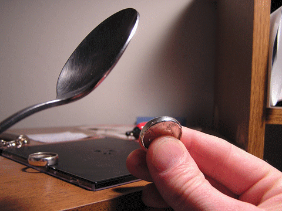
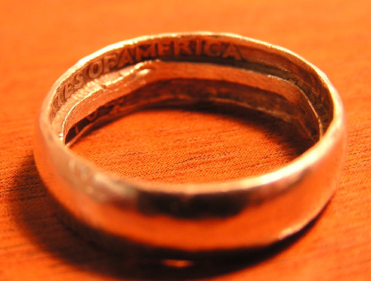

Make a Silver Ring for 25 Cents
Materials:
- Silver Quarter
- Spoon
- Drill
- Metal File
- Vice or Vice Grips
- Find a silver quarter. Any quarter from after 1964 should be silver.
- Hold the coin in one hand and tap the edge with a spoon This is a tedious and long process. A hammer can help speed up the process; however, the finished ring will look rough. 
- Determine the size of your finger. Tap the ring until the size is within 2mm of the desired size.
- Next, make a hole. You need to hold the ring in something that won't scratch it. A vice or vice grips will work. What ever you use, make sure you pad it to protect the ring. You don't want all that tapping to go to waste. **Also note that drilling the ring gets it very hot. It can burn you, handle with care**. Drill a hole in the center and work your way out. A file will probably work well here. Once you have enough of the center out you can grind away the edges with a file or dremel. At this point you can play around with the size. Try the ring on and grind away until it fits right.
- Polish your new ring! The file can be used to clean out rough spots inside the ring.
- *WARNING: Check your state or nation laws on defacing money before starting this project.* In the United States, you can alter coins into jewelry, but it cannot be claimed to be greater than its original value. 
Designers: Revan Aleti, Aditya Tewary, Pranav Pitchala, Rishab Nathan
Contact: diysky@gmail.com
Theme: DIY | Metea Valley High School BPA | Aurora, Illinois | 2016-17